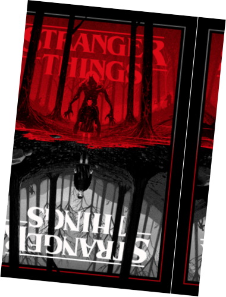
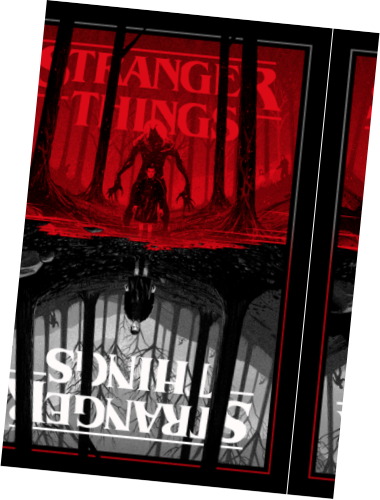

o mundo invertido
O Mundo Invertido parece uma cópia do nosso mundo, mas com criaturas horrendas, tempestades assustadoras, muita escuridão e entidades malignas. Um reino controlado por Vecna, que tem planos de trazer tudo isso ao nosso mundo.
Uma jornada para quem não tem medo do desconhecido. O caminho para o Mundo invertido é incerto, repleto de obstáculos e perigos. Porém, a recompensa é grande: salvar Hawkings e o mundo todo das garras de Vecna. Você está preparado? Então clique no botão abaixo para entrar no Mundo Invertido!
O Mundo Invertido parece uma cópia do nosso mundo, mas com criaturas horrendas, tempestades assustadoras, muita escuridão e entidades malignas. Um reino controlado por Vecna, que tem planos de trazer tudo isso ao nosso mundo.
